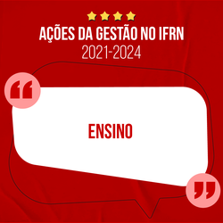
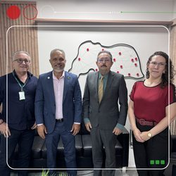
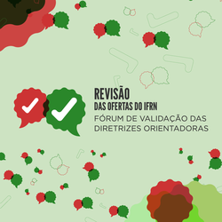

Notícias
Todas as notícias →
  IFRN 115 anos: ensino e qualidade acadêmica transformando vidas
IFRN e TCE discutem parceria para a implementação do Gaepe-RN
IFRN 115 anos: unidade e integridade fortalecem a comunidade acadêmica
Revisão das Ofertas 2025: Conheça as datas confirmadas
Há 1 dia, 12 horas
Há 2 dias, 5 horas
Há 2 dias, 7 horas
Há 2 dias, 11 horas
Conheça nossos Cursos
Conhercer mais Cursos →
Você sabia que o IFRN tem 222 cursos, distribuídos nos mais diversos níveis? É isso mesmo. São 222 cursos gratuitos distribuídos entre cursos de formação inicial e continuada, técnicos integrados, subsequentes, pró-funcionários, superiores e de pós-graduação.
Mestrado
Mestrado em Ensino
Carga horária: 42 créditos
Duração: Dois anos
Mestrado
Mestrado em Ensino
Carga horária: 4110h
Duração: Quatro anos
Mestrado
Mestrado em Ensino
Carga horária: 400h
Duração: Um ano
FIC
Processamento de Frutos
Carga horária: 254 horas
Duração: Oito meses
Processos seletivos
Todos os processos →
O IFRN oferece anualmente mais de seis mil vagas em cursos de diferentes níveis e modalidades, permitindo que estudantes se candidatem por meio de processos seletivos internos ou pelo SiSU, utilizando as notas do Enem. Além disso, a instituição coordena seleções para novos servidores efetivos, pessoal temporário e ainda oportunidades de bolsas, auxílios e participação em projetos. As pessoas interessadas podem utilizar os filtros disponíveis no sistema de busca para encontrar as informações desejadas.
Em andamento:
Técnico Integrado - Exame de Seleção
Edital: 23/2024 - PROEN
Exame de Seleção 2025
15/01/2025 às 08:00
Vagas remanescentes
Chamada até 30/04 às 23:00
Técnico Subsequente
Edital: 7/2025 - PROEN
Cursos Técnicos Subsequentes 2025
21/03/2025 às 07:00
Matrículas
Período aberto a partir de 21/03 às 07:00
19/03/2025 às 14:00
Resultado Final
Disponível a partir de 19/03 às 14:00
Reingresso
Edital: 5/2025 - PROEN
Reingresso 2025.1
19/03/2025 às 08:00
Matrículas
Período aberto a partir de 19/03 às 08:00
14/03/2025 às 14:00
Resultado Final
Disponível a partir de 14/03 às 14:00